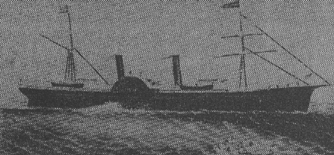

Quaker City
1867
"I never was so glad to get home again before." Mark Twain, Innocents Abroad

picture courtesy of Mark Twain Overseas
"When my jolly old captain came in, we squared accounts & then went down to look at the ship (steamer Quaker
City.) She is a right stately-looking vessel." letter to Jane Lampton Clemens and Family, 4.15.1867, New York, NY,
as quoted in Mark Twain's Letters, Vol. 2
"The worst of it is, that a ship is a bad writing desk & I can't write on shore because I have too much to see there.
So I neglect my corresspondance half the time and botch it the balance." letter to Frank Fuller, 8.7.1867, Naples,
Italy, as quoted in Mark Twain's Letters, Vol. 2

Back to Angel's Camp | On to New York